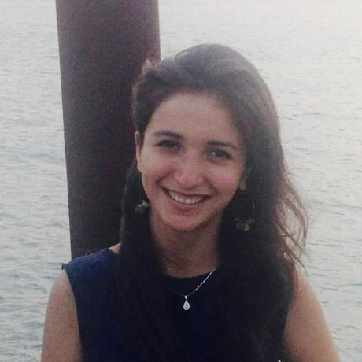
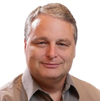

Description
We study AI-agent methods that reconstruct, generate, or refine 3D structures and time-varying 3D models for scientific inference, physical simulation, or function-driven design, evaluated beyond visual appearance.
Scientific simulation and design require 3D/4D models whose geometry, motion, and physical properties support reliable predictions. The third 3D4S workshop explores AI agents that reconstruct, generate, and refine these models through measurement, geometric verification, and numerical simulation. We bring together computer vision, graphics, scientific computing, and domain science to study tool orchestration, uncertainty, physical validity, and evaluation beyond visual appearance. Through invited talks, contributed papers, posters, and discussions, participants will develop shared evaluation criteria and reproducible workflows for agentic modeling in engineering, environmental science, biomedicine, and materials research.
What do we mean by agentic? An agent selects or revises modeling actions using observations, tool outputs, or feedback. We welcome tool-using language and vision-language agents, learned controllers, and human-agent collaboration. 4D means time-varying 3D, including geometry, motion, and physical properties.
The scientific question comes first: a force, flux, deformation, material property, or functional constraint. This raises three questions:
- Q1: How can agents integrate heterogeneous images, depth, tomography, and trajectories to reconstruct reliable 3D/4D models and identify missing evidence?
- Q2: How can scientific feedback guide geometry generation, meshing, physical identification, and inverse design toward measurable physical objectives?
- Q3: How can we evaluate accuracy, uncertainty, and computational efficiency, including the benefit of adaptive agents over fixed workflows with matched resources?
Building on WACV 2024 and CVPR 2026, our third edition extends scientific geometry reconstruction and generation to agent-directed modeling: observe or specify, build, verify, simulate or measure, diagnose, and revise. CVPR 2026 brought together 150 attendees and received 21 paper submissions.
Topics
- Measurement-grounded reconstruction. Agents that combine images, depth, LiDAR, tomography, and trajectories to recover 3D geometry, motion, and physical properties, and choose additional observations when evidence is insufficient.
- Geometry for numerical simulation. Mesh and CAD repair, implicit-to-mesh conversion, unit and coordinate checks, boundary preservation, discretization, and reliable interfaces between visual models and solvers.
- Function-driven generation and inverse design. Geometry revised using aerodynamic, structural, transport, fabrication, or material objectives, with explicit constraints and comparisons across simulation fidelities.
- Dynamic modeling and physical identification. Time-varying shape, deformable objects, interactions, constitutive parameters, and boundary conditions, tested on unseen observations or physical behavior.
- Scientific tool use and collaboration. Adaptive tool selection, solver feedback, execution recovery, provenance, specialist agents, and human review, compared with fixed workflows using matched resources.
- Evaluation, uncertainty, and reproducibility. Independent validation, uncertainty propagation, negative results, held-out conditions, and scientific progress measured against compute and human effort.
Scientific Domains: Applications include engineering design, fluid and solid mechanics, environmental and geospatial science, biomedical modeling, scientific instruments, and molecular or crystal structures when geometry or dynamics is central to the task. Purely appearance-driven generation and generic agents without a substantive 3D/4D modeling connection fall outside the core scope.
Speakers (A-Z by Last Name)
Call for Papers
We invite methods, systems, applications, benchmarks, and negative results on agentic 3D/4D modeling for scientific simulation and design. Contributions should identify a scientific objective beyond visual appearance and explain how agent actions or feedback support that objective.
The workshop is non-archival. Papers receive double-blind peer review. Accepted papers are presented as posters, with selected papers featured in contributed talks, and are shared through OpenReview. They do not appear in IEEE/CVF proceedings.
We provide more submission details: Guidance for 3D4Science CFP at CVPR 2027.OpenReview submission portal: https://openreview.net/group?id=thecvf.com/CVPR/2027/Workshop/3D4S
Important Dates
All submission deadlines are at 23:59 Anywhere on Earth (AoE).
- Abstract registration deadline: February 15, 2027
- Paper submission deadline: February 19, 2027
- Review bidding period: February 20-24, 2027
- Reviewer deadline: March 12, 2027
- Acceptance/rejection notification: March 22, 2027
- Final non-archival versions: April 23, 2027
- Workshop date: June 20 or 21, 2027, assigned by CVPR
Schedule
The 4.5-hour, in-person workshop runs from 8:00 am to 12:30 pm or 12:30 pm to 5:00 pm, Seattle local time. The program includes five invited talks, one contributed-talk session, posters, and a five-minute closing.
| Morning (Seattle time) | Afternoon (Seattle time) | Session |
|---|---|---|
| 08:00 - 08:10 | 12:30 - 12:40 | Opening remarks and trustworthy agentic 3D agenda |
| 08:10 - 08:45 | 12:40 - 13:15 | Invited Talk 1 |
| 08:45 - 09:20 | 13:15 - 13:50 | Invited Talk 2 |
| 09:20 - 09:50 | 13:50 - 14:20 | Three contributed talks, 10 minutes each including questions |
| 09:50 - 10:40 | 14:20 - 15:10 | Poster session and coffee break |
| 10:40 - 11:15 | 15:10 - 15:45 | Invited Talk 3 |
| 11:15 - 11:50 | 15:45 - 16:20 | Invited Talk 4 |
| 11:50 - 12:25 | 16:20 - 16:55 | Invited Talk 5 |
| 12:25 - 12:30 | 16:55 - 17:00 | Closing |
Each contributed talk lasts 10 minutes including questions. All accepted papers receive a poster slot; contributed talks are selected for scientific quality and complementary perspectives. The workshop does not include a competition or challenge.
Organizers

Marissa Ramirez de Chanlatte
Principal Investor, Playground Global
Wuyang Chen
Assistant Professor, Simon Fraser University
Chuhang Zou
Staff AI Research Scientist, Meta Reality Labs

Daniel Martin
Computational Scientist and Group Lead, Applied Numerical Algorithms Group
Lawrence Berkeley National Laboratory
Michael Mahoney
Adjunct Professor, Department of Statistics, UC Berkeley
Vice President and Director of the Big Data Group, ICSI
Group Lead, Machine Learning and Analytics, Lawrence Berkeley National Laboratory